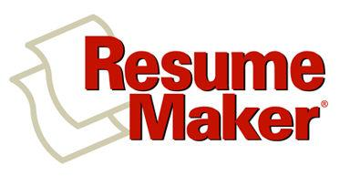

Welcome
to Resume Maker
Resume Maker
has everything you need to create
professional looking resumes and cover letters to help you get the job you want.
- Create
professional resumes with
Guided Resume
— easy, step-by-step guides to help you create sharp-looking resumes
every time.
- Compose
dynamic cover letters with
Guided Letters—
choose from hundreds of pre-written paragraphs created by experts.
- Fax and
e-mail your resume and cover letter together to prospective employers.
Requires that fax and e-mail software have been installed on your computer.
- Post your
resume on the Internet — let your resume be viewed by hiring employers at
leading corporations and automatically post your resume to every major Resume
Bank on the World Wide Web, available to thousands of hiring employers.
- Find Jobs
Online — search for job openings online using
Job Finder.
Find jobs based on your criteria from millions of openings online.
-
Contact Manager
— stay organized, keep track of your job interviews, target specific
companies, and follow through with to-do items. View a calendar to keep
organized.
-
Virtual Interview
and
Expert Advice —
improve interviewing skills in the Virtual Interview and get Expert Tips from
career experts for more effective job hunting techniques.
We wish you the very best
success in your job search!
Next
Topic Quick Tour